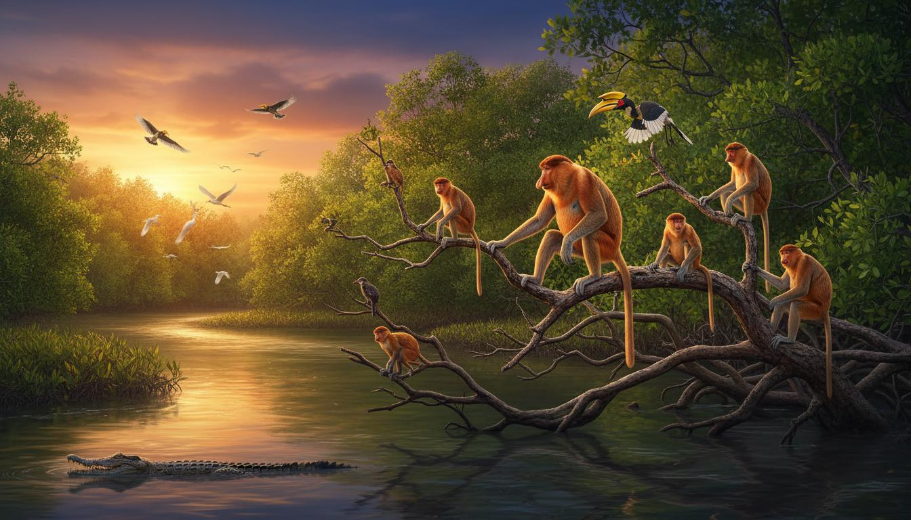

Sepilok Orangutan Centre
Meet the "Old Man of the Forest"
The Sepilok Orangutan Rehabilitation Centre is one of the most inspiring wildlife sanctuaries in the world. Founded in 1964, this 43-square-kilometer reserve is dedicated to rehabilitating orphaned, injured, and displaced orangutans, with the ultimate goal of returning them to the wild. Located about 25 kilometers west of Sandakan, it offers visitors a rare opportunity to observe these magnificent great apes up close in their natural rainforest habitat.

A Legacy of Conservation
For over 60 years, Sepilok has been at the forefront of orangutan conservation. The centre rehabilitates young orphaned orangutans who have been rescued from logging sites, plantations, or illegal captivity. Here, they learn essential survival skills - from climbing and foraging to building nests - from older orangutans and dedicated caretakers.
The centre covers 10 square kilometers of protected land at the edge of the Kabili-Sepilok Forest Reserve. Over 60-80 orangutans currently live independently within the reserve, with many more having been successfully released back into the wild over the decades.
Visitor Experience
- Feeding Platforms: Watch orangutans arrive for supplementary feeding twice daily
- Nursery Viewing: Observe young orangutans learning essential skills in the outdoor nursery
- Boardwalk Trails: Explore the rainforest via elevated boardwalks through the canopy
- Educational Exhibits: Learn about orangutan behavior, biology, and conservation efforts
- Nocturnal Walks: Spot wildlife during guided night walks in the reserve
- Bornean Sun Bear Centre: Visit the adjacent conservation centre for sun bears
Visiting Information
| Detail | Information |
|---|---|
| Location | Kabili-Sepilok Forest Reserve, Sandakan |
| Established | 1964 |
| Opening Hours | 9:00 AM - 12:00 PM, 2:00 PM - 4:00 PM (daily) |
| Feeding Times | 10:00 AM and 3:00 PM daily |
| Best Time to Visit | March to October (drier season) |
| Entrance Fee | MYR 30 (adult), MYR 15 (child), MYR 10 (camera) |
| Distance from Sandakan | Approximately 25 km (30-minute drive) |
| Accessibility | Wheelchair-friendly boardwalks available |
About Bornean Orangutans

Intelligent Great Apes
Orangutans are among our closest relatives in the animal kingdom, sharing approximately 97% of their DNA with humans. The name "orangutan" comes from the Malay words "orang" (person) and "hutan" (forest), literally meaning "person of the forest."
These solitary, highly intelligent apes are the largest tree-dwelling mammals on Earth. An adult male can weigh up to 100 kg and have an arm span of over 2 meters. They spend most of their lives in the forest canopy, where they build elaborate nests to sleep in each night.
Conservation Status
Bornean orangutans are classified as Critically Endangered by the IUCN. Their population has declined by over 80% in the past 75 years due to habitat loss from deforestation and palm oil plantations. Sepilok's work is more important than ever in ensuring the survival of this species.
Visitor Guidelines
Important Rules
- Keep a minimum distance of 5 meters from orangutans at all times
- Do not touch, feed, or attempt to interact with the orangutans
- No flash photography - it disturbs the animals
- Stay on designated boardwalks and paths
- Do not bring food or drinks into the reserve
- Cover up - wear long sleeves and use mosquito repellent
- Stay quiet during observations to avoid startling the animals
Sounds of the Rainforest
Listen to the calls of the wild in Sepilok's ancient forest
Support Orangutan Conservation
Adopt an orangutan or donate to support rehabilitation efforts.
Get Involved